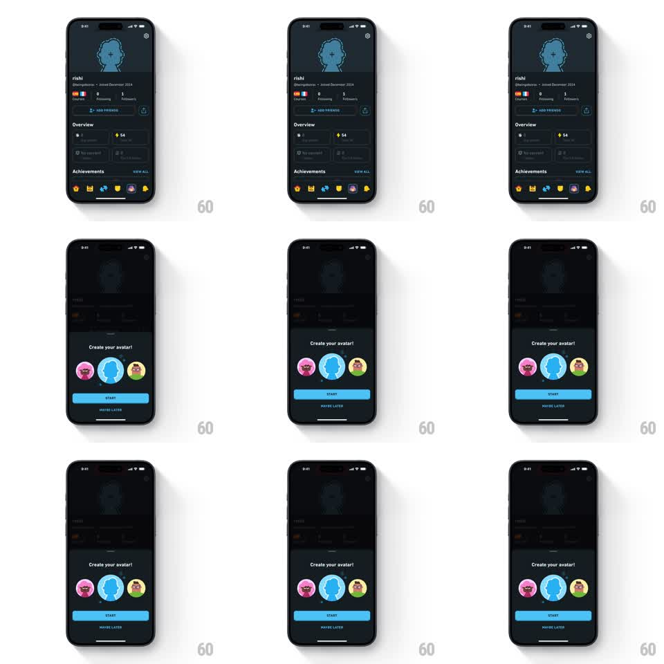

Media
Frame-by-frame

Rebuild this interaction 1:1: Duolingo's avatar-creation prompt - tapping the blue profile silhouette on the dark profile page drops a scrim and slides up a "Create your avatar!" sheet with three avatar choices, a START button, and a MAYBE LATER escape.

Rebuild this interaction 1:1: Duolingo's avatar-creation prompt - tapping the blue profile silhouette on the dark profile page drops a scrim and slides up a "Create your avatar!" sheet with three avatar choices, a START button, and a MAYBE LATER escape. ## Integration Integration: stack-agnostic spec - springs given as stiffness/damping, timed motions as duration + curve; map every value to your framework and animation library of choice. ## Scene Dark-mode profile screen: header with gear, large blue head-and-shoulders silhouette placeholder, username, stats, achievements row. On tap of the silhouette: black scrim at ~50% and a dark bottom sheet - "Create your avatar!" title, three circular avatar options (two illustrated characters flanking the blue silhouette, which is preselected), full-width blue START button, gray MAYBE LATER text button. ## Motion spec Pattern: spring bottom sheet over a dimming scrim. - Scrim fades to 50% black over 200ms. - The sheet slides up: translateY 100% to 0, spring stiffness ~300, damping ~28, one soft overshoot, ~450ms to settle. - Sheet content staggers in after the sheet lands: title first (opacity 0 to 1, 150ms), then the three avatar circles popping left to right (scale 0.6 to 1.0, spring stiffness ~340, damping ~20, 80ms apart), then the buttons fade (150ms). - The selected avatar option carries a subtle press state: scale 0.95 on touch-down, spring back on release. - MAYBE LATER dismisses: sheet slides down (300ms, ease-in), scrim fades out. ## Calibration - Dark surfaces stay dark: sheet, scrim, and profile all live in the same dark palette - no white flash during the transition. - Content stagger waits for the sheet to land; animating content during travel reads as jank. ## Reduced motion Scrim and sheet crossfade in place over 200ms; content appears with the sheet. ## Don't miss - The blue silhouette is the preselected option in the sheet - the sheet mirrors the profile state. - MAYBE LATER is a text button, visually subordinate to START.